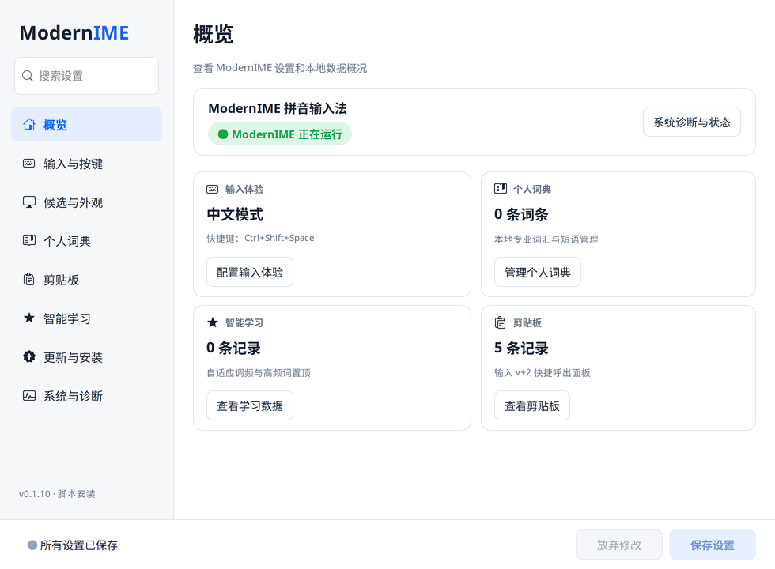

中英文，轻松切换。
单键 Shift 或自定义组合键，把切换方式交给你的习惯。
为 LINUX 而生 / OPEN SOURCE
为 Linux 桌面打造的现代 Fcitx5 拼音输入法。
从容错、选词到常用工具，把日常输入的细节一起打磨。
A LITTLE NOTE / 一点日常
你好，Linux。
今天也有很多想法，
值得被好好表达。
01 / INPUT EXPERIENCE
熟悉的拼音输入，多一点顺手的细节。
单字、词组，按长度自动分配。候选变长，栏宽依然从容。
网页示意 · 示例使用可容纳 9 个单字候选的栏长
单键 Shift 或自定义组合键，把切换方式交给你的习惯。
本地学习你的选词习惯。常用表达、专业词汇，也能收进个人词典。
V 模式数字转换、符号与 Emoji，以及 V+2 剪贴板，让输入少一些来回。
给偶尔的手误留点余地
覆盖六类常用场景
输入英文时，可显示中文含义
学习记录与词典保存在本机
IN YOUR EVERYDAY / 一天里的每一句
三种使用场景，看看哪些细节适合你。
早上好，今天也一起加油。
Shift 切换中英文，Space 确认首选。熟悉的节奏，就按你的习惯。
从分布式系统到知识产权，
专业表达，也可以顺手。
内置专业词库，配合本地习惯学习；自己的常用词，也能加入个人词典。
01 / 链接https://github.com/sunshine134679
02 / 文本下次见，也带上你的新想法。
03 / 文本一字一句，慢慢积累。
中文输入状态下输入触发字母与数字，调出常用内容。历史保存在本机，可在客户端管理。
六类内置词库，从日常表达走进专业语境。
02 / MAKE IT YOURS
以下是实际 GTK3 客户端界面。
外观、按键、词典和剪贴板，都有清晰的入口。

查看原图已显示概览
真实客户端界面，使用隔离的示例数据；上方输入卡片为网页交互示意。截图对应的功能以发布版本为准。
候选字号、栏长和释义显示，配合外观预览调整。
管理常用词条，导入、导出自己的用词积累。
集中查看运行状态、安装渠道和诊断信息。
03 / GET STARTED
选择与你的系统匹配的安装方式。
预编译 DEB · x86_64 / amd64
APT 安装（推荐） 下载 .deb安装本地包：sudo apt install ./modernime*.deb
预编译 RPM · x86_64
24.03 SP4 需要额外配置依赖源。查看兼容说明
便携归档 / 源码构建
ARM64 及其他发行版建议源码构建。查看源码安装
已经通过脚本安装？先迁移安装渠道 ，保留词典和学习数据。
当前命令适用于 Ubuntu 24.04 LTS / amd64。请在上方选择与你的系统对应的版本。
独立 Signed-By 密钥环 · 核对签名公钥指纹
sudo apt update && sudo apt install -y curl ca-certificates &&
curl -fsSL https://sunshine134679.github.io/fcitx5-linux-pinyin-input-method/apt/modernime-archive-keyring.gpg -o modernime-archive-keyring.gpg &&
sudo install -D -m 0644 modernime-archive-keyring.gpg /usr/share/keyrings/modernime-archive-keyring.gpgcurl -fsSL https://sunshine134679.github.io/fcitx5-linux-pinyin-input-method/apt/client/modernime-noble.sources -o modernime.sources &&
sudo install -D -m 0644 modernime.sources /etc/apt/sources.list.d/modernime.sourcessudo apt update && sudo apt install modernime后续更新：sudo apt update && sudo apt install --only-upgrade modernime
适用于 openEuler 24.09 / x86_64；24.03 SP4 请先按完整文档配置依赖源。
包体与仓库索引签名验证 · 核对签名公钥指纹
sudo dnf install -y curl dnf-plugins-core &&
sudo dnf config-manager --set-enabled EPOLcurl -fsSL https://sunshine134679.github.io/fcitx5-linux-pinyin-input-method/rpm/client/modernime-openeuler-24.09.repo -o modernime.repo &&
sudo install -D -m 0644 modernime.repo /etc/yum.repos.d/modernime-openeuler-24.09.reposudo dnf makecache && sudo dnf install modernime后续更新：sudo dnf upgrade modernime
READY TO TYPE / 安装之后
让输入法环境配置生效。
在 Fcitx5 配置中添加输入法。
确认 Fcitx5 正在运行，切换到中文。
git clone https://github.com/sunshine134679/fcitx5-linux-pinyin-input-method.git
cd fcitx5-linux-pinyin-input-method
./install.sh安装后重新登录桌面会话，在 Fcitx5 配置中添加 ModernIME，并确认 Fcitx5 已作为当前输入法框架运行。详细步骤和发行版差异可在 运行与配置文档中查看。
Ubuntu / Debian 可配置签名 APT 软件源，openEuler 24.09 可配置签名 DNF 软件源。检查更新前先刷新软件源缓存。脚本安装与系统包属于不同渠道，切换渠道请使用文档中的迁移工具。查看软件源与迁移指南
个人词典、习惯学习记录和剪贴板历史保存在本机。设置客户端提供相应管理入口；更新和迁移工具会对现有学习数据进行备份校验。请在迁移或卸载前阅读文档并保留重要数据。
当前预编译 DEB 和 RPM 安装包面向页面列出的 x86_64 系统。ARM64、Fedora 等其他环境可按文档准备 Fcitx5、LibIME 和构建依赖后从源码安装。请以目标发行版的依赖版本和构建结果为准。
BUILT IN THE OPEN
代码开放，想法也欢迎。
报告一个问题、分享一个建议，或贡献一行代码。